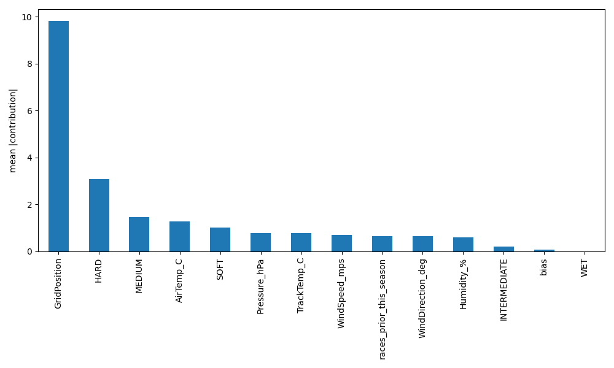

SHAP-like report (XGBoost pred_contribs)
Global importance (validation — mean |contribution|)

Top features (validation)
- GridPosition: 9.8317
- HARD: 3.0776
- MEDIUM: 1.4499
- AirTemp_C: 1.2679
- SOFT: 1.0291
- Pressure_hPa: 0.7832
- TrackTemp_C: 0.7790
- WindSpeed_mps: 0.7019
- races_prior_this_season: 0.6639
- WindDirection_deg: 0.6427
Local contributions (first 3 test rows)
Test row 0
Open contribution table
Test row 1
Open contribution table
Test row 2
Open contribution table